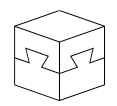
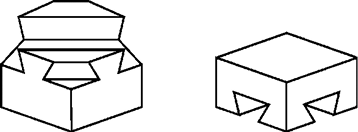

OLANAKSIZ GÖZÜKEN GEÇME

Usta marangoz, çıraklarına tahtadan bir küp gösterdi, üst ve alt iki parçadan oluşan bu küpün 4 yan yüzünün her biri şekilde görülen aynı geçmeyi içeriyordu. Fakat çıraklar aynı şeyi denediklerinde yapamadılar. Acaba neden?
Cevap:
Çünkü geçmeler çırakların düşündüğü gibi küpün yüzlerine paralel değil, köşegen yönünde çaprazdı.
